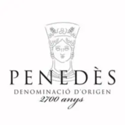
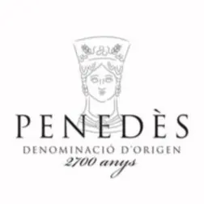

ENTRE VINYES
Entre Vinyes es una bodega familiar situada en el Parque Natural del Foix, en pleno corazón del Baix Penedès.
Nacida del deseo de recuperar el antiguo viñedo familiar de Pep, este proyecto liderado por María y Josep combina tradición, sostenibilidad y un profundo respeto por el paisaje que los rodea. En un entorno natural de terrazas con viñas y olivos, Entre Vinyes elabora vinos y cavas que expresan con honestidad el carácter del lugar.
Las cepas de Xarel·lo, Macabeu y Parellada, con más de 60 años de vida, crecen en suelos calizos, pobres y drenantes, rodeadas de encinas, pinos y una biodiversidad que equilibra de forma natural el ecosistema. En estas condiciones exigentes, la viticultura se practica de forma artesanal, respetando los ritmos de la tierra y manteniendo viva la tradición local.
 
